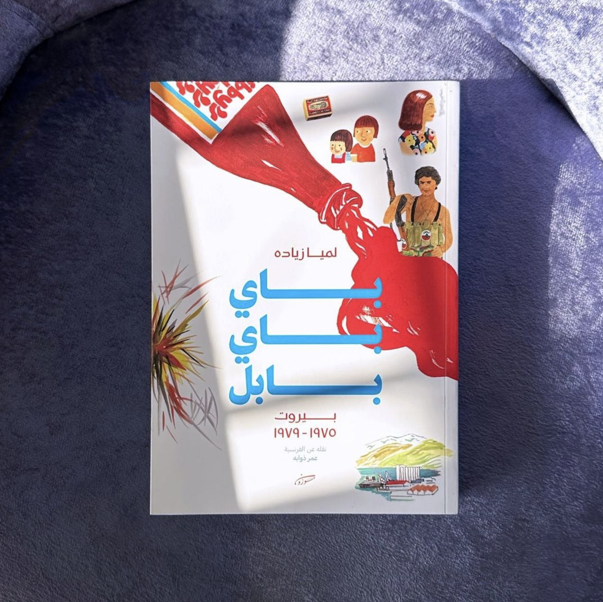

Hello, I'm Layan Abdul Shakoor. My first name is pronounced exactly as you'd say "Leanne", and my mother chose this name because it has both Arabic and Western meanings.
I am a Saudi-Austrian publisher and aspiring book historian. I have recently moved to the Netherlands with my beloved two dogs, who are rescues from a Jeddah-based dog shelter.
I studied Media and Filmmaking at Northwestern University and graduated as valedictorian of my class back in the day.
As a publisher with more than 8 years of experience in the field, I founded Mauzoun, the Arab world's first exclusively royalty-based publishing house, and we won several awards for our work. We publish Arabic language novels, graphic novels, and coffee table books.
One of our most popular publications.
| Prior Knowledge | In the specific context of this course, I have prior knowledge with HTML. In the larger context of this MA program, my prior expertise lies in research and publishing in all of its aspects due to the nature of my career. |
| Expectations | I joined this MA program because of my keen interest in the scarcely researched but heavily documented history of Hijazi (particularly Meccan) manuscripts and library practices, and learning how to code and navigate metadata are of course integral components of that. |
A glimpse into the aforementioned archival work.